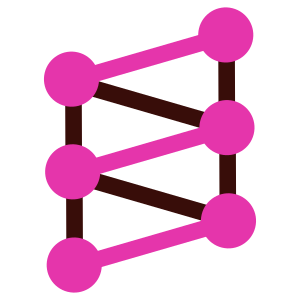
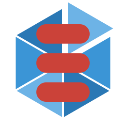
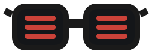
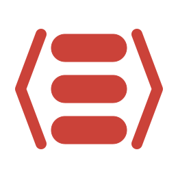
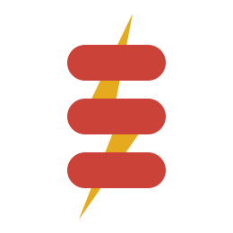

Caliban
GraphQL
Purely functional GraphQL servers and clients.
Docs
Star
Open-source Scala libraries built by Pierre Ricadat.

GraphQL
Purely functional GraphQL servers and clients.

Entity sharding
Reach entities by ID, wherever they live.

Redis & Valkey
Native Scala 3 client, not a Java wrapper.

Protobuf & gRPC
Define it in Scala, generate the rest.

Domain logic
Direct-style, monad-free and lightning fast.
One job per library. Use one, or combine them.
Fast, used at companies I've worked at and beyond.
Great docs, and integrations across the ecosystem.
or simply star the ones you use